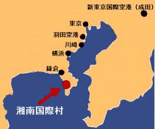
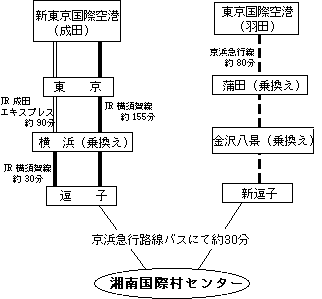
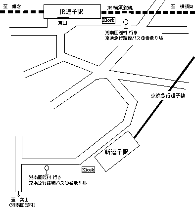

成田空港からセンターまでは、成田空港〜横浜間を成田エクスプレスご利用の場合、所要時間は約2時間30分です。東京駅からはJR横須賀線なら乗り換えなしで逗子駅に着き、センターまでの所要時間は約90分です。
羽田空港駅や横浜駅からは京浜急行線もご利用になれます。

JR逗子駅もしくは京浜急行新逗子駅からセンターまでは、京浜急行路線バス「湘南国際村行（逗16）」がご利用になれます。逗子駅前のバス停は1番乗り場で、所要時間は約30分です。（JR逗子駅←→湘南国際村 バス時刻表）
お車でお越しの場合は横浜横須賀道路の横須賀ICでお降り下さい。下記の地図に沿って葉山方面を目指してお越しいただければ、信号機下に［湘南国際村入口」のサインが見えてきますので左折後、［湘南国際村センター入口」の信号機で再度左折し右手側二つめの半円形の施設です。
当センターは約48台分の駐車場がございますが、一般来館者も多いため、お車でお越しの際は、事前に当センターにご一報下さい。当センター駐車場は2時間まで無料となっておりますが、それ以降は1時間当たり200円です。研修者の方はフロントにお申し出いただければ無料処理致します。
